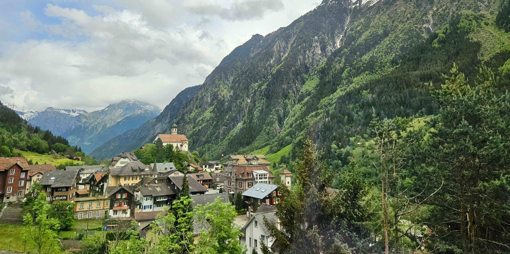

Wer kennt sie nicht? Die Kirche von Wassen, auf Mundart: «s Chileli vo
Wasse». Aus der Website der Gemeinde Wassen lässt sich entnehmen: «Die
Kirche von Wassen ist aufgrund der Kehrtunnels der Gotthard-Bergstrecke
berühmt. Bei einer Bahnfahrt wird sie aus drei verschiedenen
Perspektiven sichtbar.» Der Kabarettist Emil Steinberger hat mit seinem
Sketch «Chileli vo Wasse» im Jahre 1976 dazu beigetragen, dass die
Kirche zusätzlich an Popularität gewinnen konnte. Das Berner Rapduo Lo &
Leduc hat 2018 einen Titel mit dem Namen «Chileli vo Wasse» aufgenommen.
Dieser Song schaffte den Sprung in die Schweizer Hitparade.
Somit darf registriert werden: Die Kirche von Wassen sollte landesweit
bekannt sein. Durch die Eröffnung des Gotthard-Basistunnels im Jahr 2016
fahren nun die meisten Züge durch den Tunnel in Richtung Tessin.
Deswegen besteht die Gefahr, dass das «Chileli vo Wasse» bald an
Bekanntheitsgrad einbüssen könnte. Im folgenden Bericht soll die
Ortschaft Wassen und insbesondere die Pfarrkirche St. Gallus näher als
theologisch bedeutsamen Ort beleuchtet werden.
«Chileli vo Wasse» von Lo & Leduc
Der Refrain des eingangs erwähnten Musiktitels lautet folgendermassen:
«Ohni mi.
Es dritts Mau muess s itz würklech nümm si.
Du bisch mis Chileli vo Wasse.
Ohni mi.
Es dritts Mau muess s itz würklech nümm si.
Es git gloub nid so viu zverpasse.
I ha di gloub langsam gseh.
Du bisch mis Chileli vo Wasse.
U du hesch mi gloub langsam gseh.
Es git gloub nid so viu zverpasse.»
Wie ist das zu verstehen? Haben sich die beiden Berner-Künstler am «Chileli vo Wasse» sattgesehen? Nein. In diesem Song geht es vielmehr um eine harzige zwischenmenschliche Beziehung und nicht um das Kirchlein per se. Die beiden Personen im Song möchten sich kein drittes Mal mehr begegnen. Dem Kirchlein von Wassen kann man jedoch nicht aus dem Weg gehen, wenn man sich auf der Gotthard-Panoramastrecke befindet. Unumgänglich führt der Weg mithilfe zweier Kehrtunnels dreimal am «Chileli» vorbei. Deshalb eignet sich das Kirchlein von Wassen ideal als Wortspiel und ist daher bei diesem Musikstück metaphorisch zu deuten.
Der Blick aus der Bahn auf das erhöhte «Chileli vo Wasse». (Bild: Tobias Briker)
Die Ortschaft Wassen
Die Gemeinde Wassen liegt im oberen Urner Reusstal, am Eingang zum
Meiental. Urkundlich wird Wassen erstmals im Jahr 1287 erwähnt.
Flächenmässig ist Wassen die drittgrösste Gemeinde des Kantons Uri. Das
idyllische Meiental gehört politisch auch zu Wassen und ist
prädestiniert für Wanderungen, Mountainbike-Routen und im Winter für
Skitouren. Im Zentrum von Wassen steht der sogenannte Gallusbrunnen. Der
heilige Gallus (um 550–gegen 650) ist der Schutzpatron von Wassen. Der
Brunnen stammt aus dem 17. Jahrhundert und wurde seither einige Male
saniert. Das Wappen der Gemeinde ziert einen Bären, welcher einen
Baumstamm auf seinen Schultern trägt. Die Legende besagt, dass dieser
Bär einst den heiligen Gallus beschützt haben soll.
Zudem darf erwähnt werden, dass der weltbekannte deutsche Dichter Johann
Wolfgang von Goethe (1749–1832) hinsichtlich seiner Reisen durch die
Schweiz, zweimal in Wassen nächtigte.
Dorfplatz von Wassen mit Gallusbrunnen, 17. Jahrhundert. (Bild: Tobias Briker)
Die Pfarrkirche St. Gallus - Geschichtliches
Das exakte Alter des Kirchenstandorts lässt sich nicht explizit eruieren. Dazu fehlen archäologische Belege. Leider sind auch keine Dokumente zum barocken Neubau der Kirche im 18. Jahrhundert mehr erhalten. Es ist davon auszugehen, dass die neue Kirche am alten Standort errichtet wurde und der Kirchenturm erhalten geblieben ist. Die Jahreszahl 1734 ist sowohl beim Portalsturz als auch im Deckenbild erfasst. Belegt werden kann die Arbeit von Johann Jodokus Ritz (1697–1747) an den Seitenaltären im Jahre 1733. Die Pfarrkirche St. Gallus wurde im Jahr 1742 durch den Weihbischof des Bistums Konstanz, Franz Karl Joseph Fugger (1708–1769), eingeweiht. Zwischen 1876 und 1878 wurde die Kirche unter der Leitung des Baumeisters Franz Josef Spalt (1835–1909) saniert. In den Jahren 1965–1967 fand eine Gesamtrenovation der Kirche statt. Die Sanierung wurde unter der Leitung des Architekten Joseph Steiner (1882–1975) durchgeführt und prägt das Kirchenbild bis heute.
Die Pfarrkirche St. Gallus – Architektonisches
Die Pfarrkirche St. Gallus steht auf einem spitzen Hügel über dem Dorf.
Die imposante Lage hat dazu beigetragen, dass die Kirche zum Wahrzeichen
der Gemeinde Wassen wurde. Äusserlich tritt die Pfarrkirche eher
schlicht in Erscheinung. An der westlichen Aussenwand befindet sich ein
barockes Kruzifix und unterhalb steht eine Pietà. Eine Pietà ist eine
bildliche Darstellung der Gottesmutter Maria, welche ihren verstorbenen
Sohn Jesus Christus in den Händen hält und um ihn trauert.
Wenn man die Kirche betritt, wird ersichtlich, dass die
umgangssprachliche Bezeichnung: «s Chileli vo Wasse» eigentlich nicht
der Realität entspricht. Denn hier steht kein Kirchlein, sondern eine
eindrucksvolle, barocke Pfarrkirche. Der helle Kirchenraum lädt zum
Verweilen ein.
Die barocke Innenausstattung der Kirche St. Gallus. (Bild: Tobias Briker)
Spannend zu beobachten sind die vielen künstlerischen Details. Zum
Beispiel bei der Kanzel auf der linken Seite. Dort sind gleich vier
prominente Kirchenlehrer figürlich dargestellt. Nämlich: Augustinus von
Hippo (354–430), Papst Gregor der Grosse (um 540–604), Hieronymus (um
348/349–420) und Ambrosius von Mailand (um 339–397).
Der linke Seitenaltar ist ein sogenannter Rosenkranzaltar. Im Zentrum
steht eine Statue von Maria mit dem Jesuskind in den Händen, umgeben von
fünfzehn Rosenblättern.
Das Hochaltarbild zeigt die Himmelfahrt Mariens. Darüber befindet sich
ein Gemälde des Kirchenpatrons Gallus von Louis Niederberger (1821–1895)
aus dem Jahr 1878.
Der rechte Seitenaltar wurde, wie der linke Seitenaltar ebenfalls, von
Johann Jodokus Ritz angefertigt. Mittig befindet sich eine Skulptur des
Johannes dem Täufer, welcher in der linken Hand ein Lamm hält. Man
könnte zum Entschluss gelangen, dass hier eigentlich Jesus Christus
abgebildet ist. Passend dazu das bekannte jesuanische Wort aus dem
Johannesevangelium: «Ich bin der gute Hirt» (Joh 10,11). In der rechten
Hand hält die Skulptur jedoch einen kreuzförmigen Stab, auf dem ein
goldenes Schriftband mit der lateinischen Aufschrift «ECCE AGNUS DEI»
herunterlappt, übersetzt: «Seht, das Lamm Gottes». Dadurch lässt sich
erschliessen: Hier wird Johannes der Täufer dargestellt. Denn im
Johannesevangelium bezeichnet Johannes den Täufer den vorbeiziehenden
Jesus gleich zweimal als Lamm Gottes (vgl. Joh 1,29.36).
Die barocken Seitenaltäre wurden von Johann Jodokus Ritz 1733 angefertigt. (Bild: Tobias Briker)
Die Friedhofskapelle
Die Friedhofskapelle steht als Rundbau mit Zwiebelhelm unmittelbar vor
der Pfarrkirche und war ursprünglich ein Beinhaus (Ossarium: Raum
zur Aufbewahrung von Gebeinen). Die Kapelle wurde im Jahr 1501 erstmals
erwähnt. Der heutige Bau lässt sich geschichtlich leider nicht exakt
rekonstruieren. Fakt ist, dass die Kapelle im Jahr 1991 restauriert
wurde.
Im Zentrum des Marienaltars steht eine Skulptur der
Mater Dolorosa, der Schmerzensmutter. Die Figur trägt eine Krone
auf dem Haupt und einen dunklen Mantel. Ihr Brustbereich wird von sieben
Schwertern durchstochen. Dies dürfte eine Anlehnung an die
Sieben-Schmerzen-Mariens-Bruderschaft sein, welche im 18. Jahrhundert
gegründet wurde. Die sieben Schmerzen Mariens gelten in der
römisch-katholischen Tradition als bedeutsame Ereignisse im Leben
Mariens. Sämtliche Geschehnisse stehen im Zusammenhang der Beziehung
zwischen Maria und Jesus und beschreiben die Schmerzen Mariens. Drei
davon betreffen die Kindheit Jesu. Nämlich die Weissagung Simeons (Lk
2,25f.), die Flucht der Heiligen Familie nach Ägypten (vgl. Mt 2,13f.)
und der Verlust des zwölfjährigen Jesu im Jerusalemer Tempel (Lk
2,41f.). Die vier weiteren Schmerzen Mariens beziehen sich allesamt auf
die Passion Christi. Dies wären: Die Begegnung zwischen Jesus und Maria
auf dem Weg nach Golgota (kein explizite biblische Erwähnung), das
Ausharren Mariens unter dem Kreuz Jesu (Joh 19,25), die Abnahme Jesu vom
Kreuz (Mt 27,57f.) und die Grablegung Jesu (Joh 19,41f.).
Die Mater Dolorosa, Schmerzensmutter, in der Friedhofskapelle in Wassen. (Bild: Tobias Briker)
«Chileli vo Wasse»
Zu Beginn wurde die Frage aufgegriffen, ob sich Lo & Leduc am Kirchlein von Wassen sattgesehen haben. Die Erläuterungen haben ergeben, dass dies nicht der Fall ist. Der Song «Chileli vo Wasse» ist metaphorisch zu deuten. Daher lohnt es sich, nicht nur dreimal mit dem Zug am Kirchlein vorbeizufahren, sondern diesen theologisch bedeutsamen Ort aufzusuchen. Die barocke Kirche, die Friedhofskapelle und der Gallusbrunnen liefern allesamt Argumente dafür, die Ortschaft Wassen zu erkunden.
Tobias Briker ist Student der Theologischen Hochschule Chur.
Weitere Artikel von {{ author.author }} finden Sie hier:
Zur Vertiefung:
- Brunner, Thomas: Oberes Reusstal und Ursern (Die Kunstdenkmäler des Kantons Uri. Band IV), Bern 2008, 201–204.
- Gemeinde Wassen (2020). Homepage der Gemeinde Wassen, verfügbar unter: www.wassen.ch 16.7.2024.
- Häberli, Lorenz / Oggier, Luc (Lo & Leduc): «Chileli vo Wasse (Song)», in: LyricFind, verfügbar unter: www.lyrics/lo-leduc.ch 16.7.2024.
- Zwyssig, Markus (5.2.2018): «MUSIK: Lo von Lo & Leduc erzählt wieso er über das «Chileli vo Wasse» rappt», in: Luzerner Zeitung, verfügbar unter: www.luzernerzeitung/lo-leduc.ch 16.7.2024.